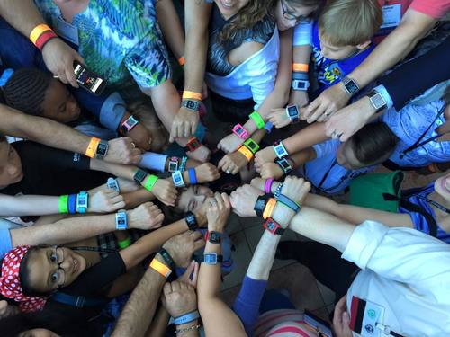
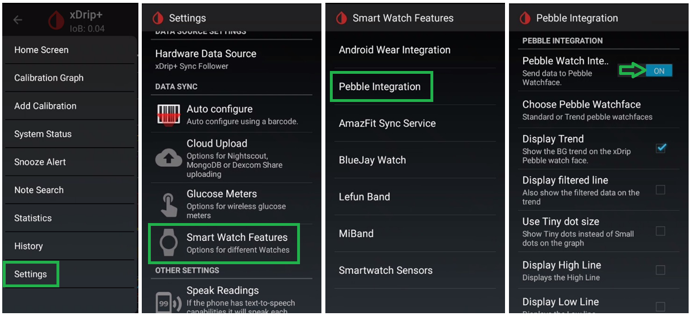
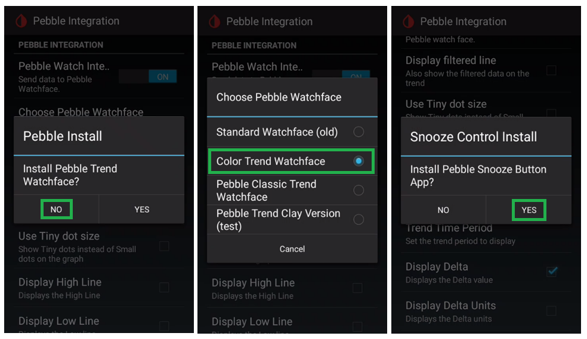
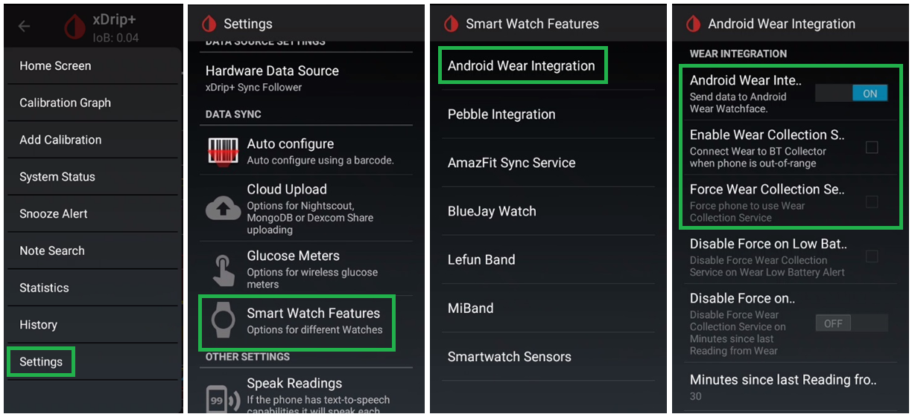
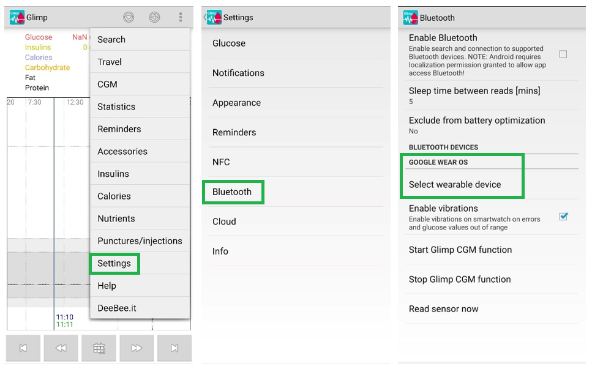

Nightscout on your Watch
Pebble Smartwatches
{kind=link}
Pebble smartwatch use is a historic milestone of CGM in the Cloud. Pebble has been bought by Fitbit in 2016 and necessary resources have moved to archives and rebble.io. Pebble support is still maintained in Loop, AndroidAPS, FreeAPS and xDrip+.
You still can find the Pebble app for iOS in the Apple Store. For Android you need to download it from APKMirror or APKPure.
For authentication and getting the watchfaces, the original server closed so you’ll need to register with Rebble.
You’ll find Nightscout watchfaces here. Search for Nightscout, CGM, …
Configure the watchface with your Nightscout site URL.
urchin
A Pebble watchface to view data from a continuous glucose monitor in graph format.
If you want to use your Pebble with Loop look here, for AndroidAPS here and FreeAPS here.
xDrip+
Enable Pebble Integration in Smartwatch features.
{kind=link}
You can answer no to default watchface install so that you will be able to select another one. You can then decide to install or not the snooze control.
{kind=link}
Android Wear OS smartwatches
With an Android smartphone.
Recommended: Install an old version of Android Wear on your phone (search APKMirror for example: Android Wear 2.9.0.185084575.gms) and pair your watch. Make sure to allow GPS and Wear OS access to position on the watch. Allow Wear OS to run in background on your phone.
Note:If you installed Wear OS, you will need to manually update the watch Google Play Services see here.
Once your smartwatch Google Play Service has been updated to a version above 9.x you can safely update Android Wear to Wear OS.
Change the watchface to match your app (in Wear OS or on your watch).
Install Wear OS on your phone and pair your watch. Make sure to allow GPS and Wear OS access to position on the watch. Allow Wear OS to run in background on your phone.
Install your app wear extension from the smartwatch Google Play store, selecting the apps installed on your phone.Note: Newer versions of Wear OS do not support this feature anymore, use Wear Installer or Use GeminiMan Wear OS Manager or Easy Fire Tools.
Change the watchface to match your app (in Wear OS or on your watch).
Install Wear OS on your phone and pair your watch. Make sure to allow GPS and Wear OS access to position on the watch. Allow Wear OS to run in background on your phone.
Use Wear Installer or Use GeminiMan Wear OS Manager or Easy Fire Tools.
Change the watchface to match your app (in Wear OS or on your watch).
xDrip+
Enable Android Wear Integration to send xDrip+ BG to the smartwatch. Do not enable neither Collection nor Force Collection.
{kind=link}
Full xDrip+ wear documentation here.
NB: you can also use Tasker.
AndroidAPS
For AndroidAPS here.
Glimp
Select your Wearable device and enable the Glimp watchface.
{kind=link}
NightWear
NightWear is a minimal Wear OS watch face and complication available in the Google Play Store directly from your watch.
It uses Wear’s standalone app support, so requires no companion app installed on the phone, or no phone at all as long as the watch has an internet connection. This also means it’s possible to display Nightscout data on a Google Wear OS watch paired with an Apple iPhone.
Amazfit Pace & Stratos
xDrip+
Install the Amazfit watch app on your phone.
Install the Amazfit tool on a Windows PC.
Download the widget from the project author (Klaus3d3) GitHub repository.
OEM unlock and enable USB debug on the watch, run TOOL ALL IN ONE and click the APK Installer button, select the widget apk file and INSTALL it. Close the install window and click Reboot System.
In xDrip+, enable the Amazfit service and select the options you want to enable.
{kind=link}
Original instructions here.
Xiaomi MiBand 2, 3, 4, 5 and 6
Amazfit Band 5, Bip, Bip Lite, Bip S and Bip S lite, T-Rex Pro
Amazfit GTR2, GTR2e, GTS2, GTS 2 mini, GTS2e, GTR42 and 47
xDrip+
Follow Artem’s instructions here.
Apple Watch
Nightguard
Apple Watch series 3 and above.
sugarmate
Important limitation
Sugarmate doesn’t allow Nightscout as a data source if you included bridge in ENABLE.
If you need this data source: enable obscuration variables.
You can setup sugarmate as a calendar complication to display Nightscout on your Apple watch.
Gluco-Tracker
Loop Follow
You can setup Loop Follow as a calendar complication to display Nightscout on your Apple watch.
Fitbit
Nightscout Monitor
Ionic/Sense/Versa/Versa 2/Versa 3/Versa Lite
Glance
Ionic/Sense/Versa/Versa 2/Versa 3/Versa 4/Versa Lite
Sentinel
Ionic/Sense/Versa/Versa 2/Versa Lite
Facebook group: Sentinel
Marclock
Ionic/Sense/Versa/Versa 2/Versa Lite
Analog watchfaces
Analog CGM
Orbits NS
Radial CGM
Ionic/Versa/Versa 2/Versa Lite/Versa 3/Sense
Samsung Gear Smartwatches
xDrip+ with Tasker
Note: also available for Android Wear devices
G-Watch app
Facebook group: G-Watch App
Garmin Smartwatches and Computers
By Phimby
By Horsetooth
By andreas-may
By Fredrik_S
By John_
By floheigl